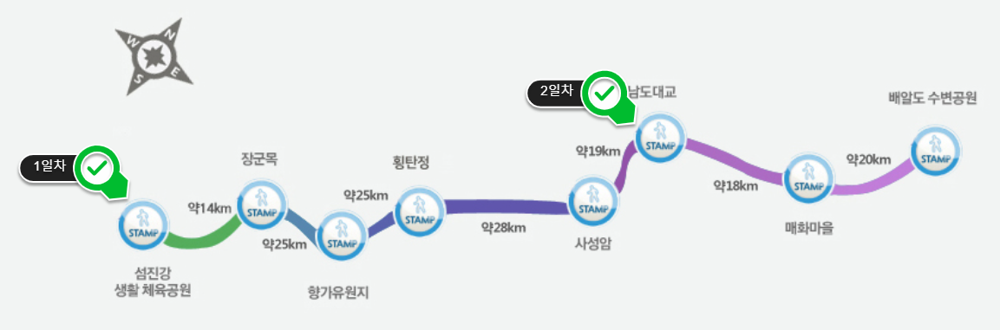

| 코스명 | 섬진강자전거길 |
| 코 스 | 섬진강인증센터-장군목인증센터-향가유원지인증센터-횡탄정인증센터-사성암인증센터-남도대교인증센터-매화마을인증센터-배알도수변공원인증센터 |
| 교 통 |
가는길 : 성남종합터미널-강진공용버스터미널 오는길 : 광양터미널-센트럴시터터미널 |
| 거 리 | 149km (실제소요거리 : 162km) |
| 시 간 | 9시간 40분 (실제소요된시간 : 7시간 47분) |
| GPX 파일 | 섬진강자전거길 GPX 다운로드 |

이번에는 섬진강 자전거길을 다녀왔다. 조금 늦게 일정이 잡히여 벗꽃이 지고 나서 가는 라이딩 이었지만 섬진강 라이딩 코스 자체가 아름다운 길이라서 지루하지 않게 라이딩할 수 있었다.
섬진강 시작을 강진터미널로 잡은 우리는 광양의 중마터미널까지 섬진강의 아름다운 경치를 보면서 달릴 수 있었고 경사도 강따라 내리막길이어서 매우 편안한 라이딩을 할 수 있었으며, 간간히 콘크리트 바닥이 울퉁불퉁하여 어려움이 있었으나 뒷바람과 함께 편안한 라이딩 길이었다.
섬진강 초입부터의 주변 경치는 자전거만 타면 달리는 근성이 있었던 우리들의 발목을 잡고 있었으며, 여기저기 구경하다보니 모두 다 하나같이 관광모드로 라이딩을 하게 되었다. (평속 20km)
섬진강 경치를 구경하다 보니 우리는 화개 장터 근처인 남도대교 인근에서 숙박을 하였다. (조금 오래된 모텔 이었으나 주변 경관이 좋으니 패스)
아침에 일찍 출발하여 매화마을에 다다르니 주변경관과 함께 햇살이 무척 아름다웠으며, 시골마을이 말 그대로 배산임수의 아름다운 경관을 자랑하고 있었다.
우리는 다시 라이딩을 하여 광양 방향의 마지막 코스인 배알도 수변공원에서 마지막 인증도장을 찍고 광양 터미널로 그이름도 유명한 광양불갈비 맛을 보기로 하고 터미널로 향하였으며, 광양제철소 근처에서는 일반 차도를 함께 라이딩을 하였는데 매우 위험한 도로 였다.
섬진강 라이딩중 옥에 티같은 상황으로 좀 당황스러웠으나 무사히 터미널에 도착하였다. 역시 광양불갈비 맛이 일품이었으며, 즐거운 라이딩을 안전하게 마칠 수 있었다.
이번 라이딩은 하루 휴가(해피프라이데이)를 이용하여 금요일 출발하였음에도 불구하고 4월 라이딩하기 좋은 계절이라 그런지 터미널에 버스를 타려는 자전거가 많이 있었다. 이제부터는 나머지 라이딩이 장거리 라이딩 이므로 버스를 이용하는데 신경을 많이 써야 할 것 같다.